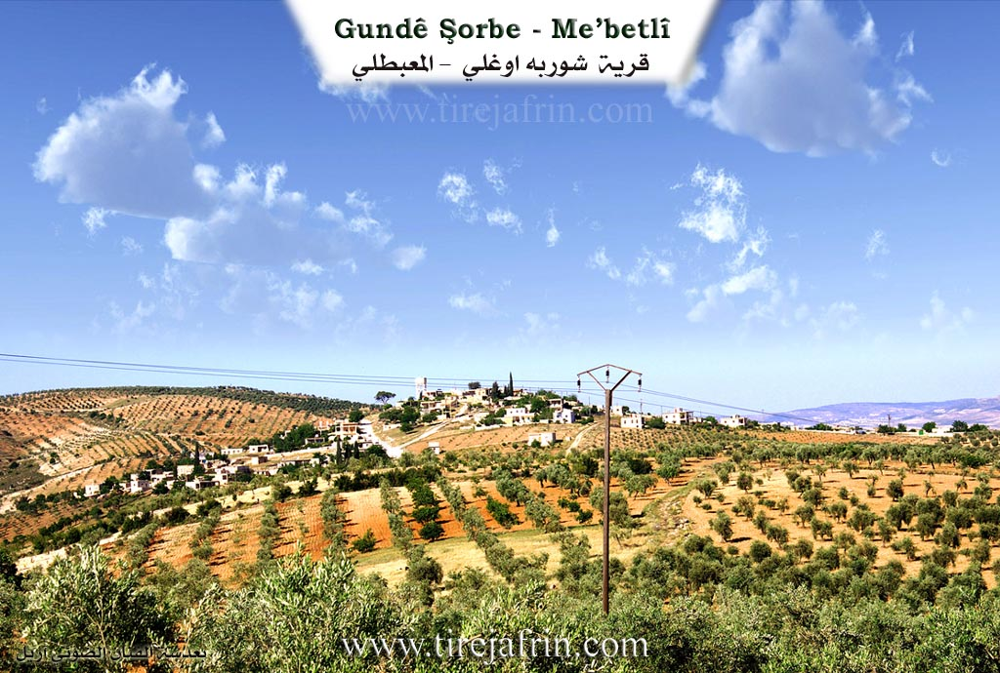
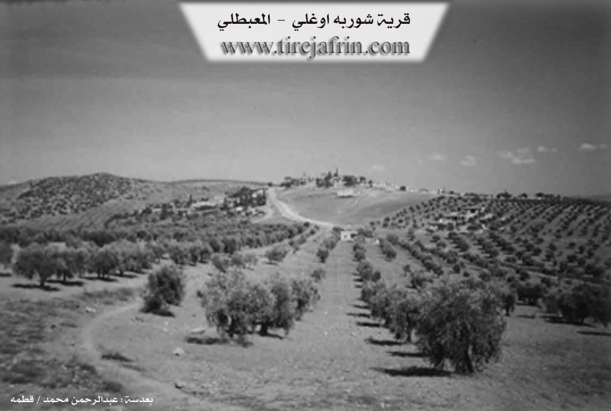

General Information
Nahiya (Subdistrict)
Mabeta
Also Known As
Al-Shorba, Shorba Oghli, Şorbe, Şûrbe, Şûrbê, Šorbe, الشوربة, شوربه اوغلي, شوربه اوغلي
Tribes
Amkan, Kêtikî
Families, Clans, etc.
Cîhad Mensûr, Eslan Axa Şorbe, Mala Hesên Cemal, Mala Qember Lez o, Mala Şurba, Mala Şêx Birîm, Malê Bêro, Malê Cafer, Malê Hesen Kurdî, Malê Horo, Malê Mensûr, Malê Tahir, Malê Usê, Malê Zênel, Malê Îbê, Malê Şûrbe, Çilûyê Ber Dêwêre

Photos



Basic Information about Şorbe
Source: Ax û Welat
Etymology: Named after the food known as "Şurba" (soup)
Source: Afrin 366
Hills: Çiyayê Xamtorê
Other Landmarks: Meydankê, Gyamrûk, Nazaz, Selmê, Mehelkê, Poxî Sûr
Summaries
I. Summary from TirejAfrin Site (English) of Şorbe
Source: https://www.tirejafrin.com/site/kura%20afrin%20%20%20mebetli%20-%20shorba.htm
It is stated in the book جبل الكرد (عفرين) دراسة جغرافية Çiyayê Kurmênc (Efrîn): A Geographical Study by د. محمد عبدو علي Dr. Mihemed Ebdo Elî: Gund Şorbe, Şorbe Oxlû, El-Şorba / 1151 inhabitants, 300 hectares, 17km, 520m /:
The name is taken from the cooking of soup (şorbe). It is said that about two centuries ago, a famine occurred in the region, so the Aghas of the village used to cook soup and distribute it to the people of the village and passersby, so the village was named Şorbe. As for the old name of the village site, it is Mrişa, without us knowing a meaning for it.
This small village is located at the head of a plateau, sloping from its northwestern side towards the valley of Ziravk. From it comes Eslan Axa, one of the leaders of the resistance against the French Mandate, and the lawyer Ismet Umer, the well known communist and former member of the People's Assembly.
It is stated in the book عفرين .... نهرها وروابيها الخضراء Efrîn... Her River and Her Green Hills by the writer عبدالرحمن محمد Ebdulrehman Mihemed from the village of Qetme regarding Şorbe Oxlî: It is a village in Çiyayê Kurmênc, belonging to the township of Mabeta, Efrîn region, Heleb governorate.
It is a small village in the middle part of the mentioned mountain, on the head of a limestone plateau that slopes steeply towards the northwest in the direction of the valley of Ziravk. It is furrowed by water streams that slope south and east to end in the valley of the Efrîn river. It is 17km away from the town of Mabeta towards the northeast. Its soil is fertile alluvial clay.
It is bordered on the north by a rugged slope, a flood valley, a high mountain chain of Çiyayê Hawarê, the village of Hesen Dêrlê, and the village of Dax Oba. It is bordered on the south by a slope and a flood valley planted with olive trees and the village of Kemrûk. It is bordered on the west by a slope and a flood valley planted with olive trees and the village of Sêmalk. It is bordered on the east by a slope, a flood valley, mountain heights planted with olive trees, Bendava 17 Nîsan (17 April Dam), and the village of Meydankê.
The number of its houses reaches about 65 houses and its age is about 450 years. Its old dwellings were stone and mud with flat wooden roofs, but all the old houses in the center of the village have disappeared and modern stone and cement ones have taken their place. It extends to the south and west sides. An electricity network is available, as well as a water network connected to the artesian well located at the bottom of the village on the southern side.
It contains a primary school and is connected by a paved road to the township center and the neighboring villages. The residents work in rain fed agriculture on an area of 300 hectares: grains, olive trees, and vines, alongside raising sheep and goats.
Among its most important families is the family of Eslan Axa Şorbe, the first to inhabit the village since ancient times, and he is the founder of the village. Eslan Axa was one of the mujahideen against the French occupation with revolutionaries such as: Ehmed Rûtû, Şêx Reşîd Êbo, and others. Among the holders of higher degrees in the village: Enes Mensûr / Doctorate in Agriculture / France.
Village Mokhtar: Reşîd Muslim Umer.
Sources:
- Book: جبل الكرد (عفرين) دراسة جغرافية Çiyayê Kurmênc (Efrîn): A Geographical Study by د. محمد عبدو علي Dr. Mihemed Ebdo Elî.
- Book: عفرين .... نهرها وروابيها الخضراء Efrîn... Her River and Her Green Hills by عبدالرحمن محمد Ebdulrehman Mihemed from the village of Qetme.
Preparation and execution:
- Director of the Tirej Efrîn site: Ebdulrehman Hacî Osman
- 20/12/2013
II. Summary of Şorbe from Ax û Welat
Source: https://www.youtube.com/watch?v=nXGgeTyJZQU
The village of Şurbê in the Efrîn region possesses a distinct identity that is inextricably linked to its culinary heritage. According to local residents, the village derives its name directly from the dish "şurba" (soup), suggesting that the settlement is defined by this specific tradition. The primary lineage mentioned in the village is the Mala Şurba family. An elder female representative of this family confirms that she, along with her parents and ancestors, are natives of Şurbê, indicating a continuous presence of this family in the location for generations.
The social fabric of Şurbê includes significant connections to the broader Levant. A notable resident is a woman originally from B'albek in Lubnan (Lebanon), specifically from the Beyt Zi'ayter family. She married into the village approximately 30 to 35 years ago after living in Hims. Despite her three decades of residence in Şurbê, she notes that her command of the Kurdish language remains limited. Her presence highlights cultural distinctions between the two regions; she observes that while weddings in Efrîn involve a "cehaz" (a trousseau or dowry display for the bride), her native customs in Lubnan simply involve the groom providing a ring.
The reputation of Şurbê revolves entirely around its traditional cuisine, which the residents prefer to cook over an open fire rather than on gas stoves to ensure superior flavor. The signature dish is Şurbe donî, a rich soup containing chickpeas ("nok"), wheat ("dan"), and yogurt ("mast"). The culinary repertoire of the village is extensive, including dishes such as Lebeniye (locally referred to as Berkufto), Sorma (stuffed leaves/dolma), Şişpere, and Kuftê bêz. The villagers identify specific foods that are unique to the Efrîn region, such as Danik and Boranîye, noting that these preparations were unknown to the Lebanese resident before her arrival. This preservation of specific cooking methods and regional recipes constitutes the primary historical and cultural record provided by the community.
II. Summary of Şorbe from Ax û Welat 2
Source: https://www.youtube.com/watch?v=EdGtumwn2qQ
Located in the Mabeta district of Efrîn, at the western foothills of Çiyayê Hawarê, the village of Şûrbe (historically known as Marîşa) holds a history defined by resilience against famine and military aggression. The village's current name, Şûrbe, originates from a severe famine that struck the region approximately 400 years ago (around 1653). During this crisis, the leading family, Malê Şûrbe, prepared large quantities of soup (şûrbe) and placed it on the road to feed starving travelers and neighbors, cementing the village's reputation for generosity.
The population is predominantly from the Amkan tribe. However, social diversity exists within the village structure; for instance, the Malê Cafer family descends from the Kêtikî tribe and migrated from Kobanî roughly 300 years ago. The village has faced significant destruction twice in its history. The first occurred around 1832–1835 during the campaign of Îbrahîm Paşa (son of Mihemed Elî Paşa). When the villagers resisted, Ottoman forces destroyed the settlement and beheaded six men from Malê Şûrbe on a local hill. Two children, Emîn and Aslan, survived the massacre and were raised by neighboring tribes; they later returned to rebuild the village. Another survivor, a woman, fled to Biza'ê near Bab, establishing the Malê Hesen Kurdî lineage there.
The second wave of destruction occurred in 1921 under the French Mandate. The village was a hub for resistance fighters, led by Aslan Axa Şûrbê, who was known as Teyrê Çiyayê Hewarê (The Eagle of Mount Hawar). Along with figures like Elî Şer, Reşîd Axa Şûrbê, and Emîn Axa Şûrbê, the villagers fought French forces in the valley of Geliyê Tîra. The French retaliated by shelling the village with cannons positioned at a landmark tree now known as Darê Topa.
The village maintains strong ties to its heritage through the Oda Emîn (also called the room of Aslan Axa), a centuries-old guesthouse that served as a political and social center for the Amkan tribe. It was here that tribal leaders from villages like Hesendêra and Qeragolê would gather to coordinate during times of war or to resolve disputes. Culturally, the village preserves traditional knowledge, exemplified by Hemîd Hûro, a renowned bonesetter (cebarcî) who treats patients without X-rays, relying on tactile skills passed down through observation. The village is also situated near Kela Bêrû, a prominent hill, and formerly relied on a Roman well (Bîrek Romanî) before it was closed by the government.
II. Summary of Şorbe from Afrin 366
Source: https://www.youtube.com/watch?v=eDTEmTQdgm4
The documentary provides a detailed observational account of life in Şûrbê, a village located in the Efrîn region. The host emphasizes the high elevation of the village, noting that its position grants it a cooler climate and fresh air that distinguishes it from surrounding areas. Geographically, Şûrbê is situated in the vicinity of Çiyayê Xamtorê and offers commanding views of nearby landmarks, including the Meydankê dam area and Gyamrûk. The village of Nazaz is also mentioned as a neighboring settlement that the team visited prior to their arrival in Şûrbê.
Agriculture and nature form the backbone of the local identity. The filming takes place during the olive harvest season, and the host observes that the village is largely quiet during the day because most residents are working among the olive trees. The natural landscape is described as beautiful but under threat. A significant portion of the commentary focuses on the economic hardships facing the region, specifically the high cost of fuel. The host points out a forested area referred to as Poxî Sûr where trees have been cut down. He explains that due to the expensive price of diesel, locals have been forced to harvest wood for heating, a practice he describes with regret but acknowledges as necessary for survival.
Socially, the village is comprised of approximately 90 households. However, the narrative highlights the profound impact of emigration. An interaction with an elderly resident named Xaltîk illustrates this theme vividly. She lives alone in a large courtyard house while her children reside abroad. She lists her sons Siyamend, Sîwar, Hesen, and Omîd as living in European nations such as Danîmark and Norwêç. Additionally, she speaks of a daughter living in Musil whom she has not seen in twenty years, underscoring the deep separation families in Efrîn endure.
Despite these challenges, the village maintains a sense of hospitality and traditional life. The host visits the household of Çilûyê Ber Dêwêre, where his cousin Leyla also resides. Çilûyê Ber Dêwêre discusses his livestock, mentioning that he keeps a small number of animals but cannot afford to expand his herd due to the exorbitant price of cows. The visit concludes with a shared meal prepared over an open fire, reflecting the resilience of the remaining community members who continue to maintain their way of life amidst economic scarcity and the departure of the younger generation. The infrastructure is described as needing improvement, with the driver expressing a strong wish for the rough dirt roads to eventually be paved with asphalt to improve accessibility for the residents.
II. Ax û Walat Book 2
ŞORBE
23.2.2017
The village of Şorbe is located opposite the slope of Hawarê mountain on the south side. It is affiliated with the Mebeta district of the Efrînê canton, 20 km north of Efrînê and 5 km east of the town of Mabeta. The village's altitude is 520 m above sea level. The village is in a place named Marî.
The village's former name was Marîşa, but its current name comes from the Şorbe family. It is said that around the year 1650, a famine occurred in the region and lasted for three years. At that time, the villagers, because they owned many sheep, relied on eating milk, or soup (Şorbe), to continue their lives, and poor people also came to the village for food. For this reason, the name Şorbê was given to the first family that settled in the village, and they themselves are from the Amka tribe.
There are 9 families in the village:
58
The Şorbe, Bêro, Cafê, and Mêsûr families both came from the Kobanê region. Îsê, Îbê, Weqês, Mistê who came from the village of Hesendêra, and the Osê family.
It is worth mentioning that relatives of the Şorbe family from the village of Biza’e, affiliated with Babê in the Şahba region, are present.
Around 90 houses and nearly 1000 people live in the village.
To the east of the village are Tilê Didêriya and the village of Meydankê. To the south are Tilê Bîrê, which is a Roman well whose water still exists, and the village cemetery which serves the three villages of Sêmalka, Gemrûkê, and Şorbe. To the west are the village of Sêmalka and the Qere Eslan shrine. And to the north are the Mirtê Valley and Hawarê mountain, and the Kuleha (Bêro) road is to the northeast of the village.
HAWARÊ Mountain: it is a mountain range north of the city of Efrînê. It ends from the village of Gobekê in the west to the village of Kotana, affiliated with the Bilbilê district, in the east. Its altitude is 869 m above sea level. On the mountain is the Fortress of
59
Hawarê, which is opposite the village of Şorbe. The history of this fortress is very long, but unfortunately, it is not known since when it was built.
The people of the village, like all the surrounding villages, make their living from agriculture, from olive fields, vineyards, grains, and vegetable gardens. Along with farming, some families own livestock. Nearly 15 people work in various factories in the city of Efrînê, and nearly 15 people work as employees in the institutions and bodies of the Autonomous Administration in Efrînê.
The Weqês shrine is in the middle of the village. The village people used to visit it on Thursday evenings.
There are 3 martyrs from the village:
Şehîd Dewrîş, Hogir and Ş. Hoşeng. The village commune is named after Ş. Hogir, and the village school is named after Ş. Dewrîş.
The village of Şorbe has been destroyed twice by the Ottomans and the French, because the people of the village stood against the campaign of Îbrahîm Elî Paşa, who in 1832, while heading towards Adana, attacked the people of the village, and as a result, the village was destroyed and 6 people were beheaded. In their place, two children, Emîn and Eslan, remained; they returned to the village and resettled the land of their ancestors.
The other attack on the village was in 1921 by the French, when they attacked with cannons and airplanes because of the village people's support for the revolutionaries against the French. Among those people were: Eslan Axa Şorbe, known as (Têrê of Hawarê Mountain), Elî Şetê,
60
Emîn Axa Şorbe, Reşîd Axa Şorbe, and nearly 100 of their followers from the Amkan tribe were present.
They fought many battles and wars in the Tîra Valley against the French soldiers and lived in Turkey until 1936, until an amnesty was issued.
After that, the French Consul Rojê Lêsko was a guest in Eslan Axa's room as a reconciliation was sought for Ehmedê Rûtê to come for reconciliation, but Eslan Axa did not agree.
Esmet Umer is an old lawyer, one of the first people to practice law in the region. He was a member of the Central Committee of the Syrian Communist Party, and from 1994 to 1998, he served as a member of the Syrian Parliament.
The literacy rate in the village is good, and nearly 25 people have obtained university degrees in various fields.
It is worth mentioning that a sad story resulted from the Armenian genocide. In 1914, groups of Armenian refugees were fleeing the genocide; they passed below the village and left behind a child in a cradle. That child, a girl, grew up with the family of Reşîd Axa Şorbe and was named ((Zelûx)) and grew up with his children. Later, she marries a man from the village of Umera and lives with her family in the city of Efrînê, has a child named Miho, and passes away in 1985.
Transcriptions and Subtitles
| Source | Video | Subtitles | Transcript |
|---|---|---|---|
| Afrin 366 1 | Watch Video | Download SRT | View Transcript |
| Ax û Welat 1 | Watch Video | Download SRT | View Transcript |
| Ax û Welat 2 | Watch Video | Download SRT | View Transcript |
Foundation/Origin Information of Şorbe
Aslan Agha Shorba was the first to inhabit the village since ancient times and he is the founder of the village.
Source: TirejAfrin Site
The village was destroyed on two separate occasions for resisting occupying forces. In 1750 and again in 1921. The main house "Oda" was built over 300 years ago by Emîn Şûrbe. It belongs to the Omkan tribe.
Source: Ax û Walat Transcript
Possible Village Name Meaning of Şorbe
The name is taken from the soup dish. It is said that about two centuries ago, there was a famine, so the women of the village would cook soup and distribute it to the people, so the village was named Shorba. The old name of the village site was "Marisha".
Source: TirejAfrin Site
The village's name originates from an event approximately 400 years ago when a great famine struck the region. During this time, the founding Şûrbe family famously provided soup (şorbe) to all travelers and hungry people.
Source: Ax û Walat Transcript
V. Links
- Tirej Afrin:
https://www.tirejafrin.com/site/kura%20afrin%20%20%20mebetli%20-%20shorba.htm - Ax û Welat:
https://www.youtube.com/watch?v=EdGtumwn2qQ - Videos:
https://www.youtube.com/watch?v=hYdv_KzyxyQ - Link:
https://www.youtube.com/watch?v=YBVlO9ulYh8 - Ax û Welat:
https://www.youtube.com/watch?v=nXGgeTyJZQU - Afrin 366:
https://www.youtube.com/watch?v=eDTEmTQdgm4